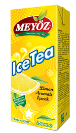

- 
-
ÖZELLİKLERİ
Meyöz Ice Tea ürünleri koruyucu ve renklendirici içermez. Tadını tamamen şeftali ve limondan alarak, meyvenin çay ile buluştuğu serinletici özelliği de olan bu yeni ürünler, gazsız olmasından dolayı tüketildiğinde şişkinlik hissi yaratmıyor.
Sıcak ve nem oranı yüksek yaz aylarında sıvı kaybı çok daha fazla olur. Su yitirilmesinden korunmak ve vücudun normal çalışması için vücut fonksiyonları ile kaybettiğimiz sıvıların yerine konması gerekmektedir. Şeftali ve Limon çeşitlerinden oluşan Meyöz Ice Tea susayıp, ferahlamak istediğinizde içimi rahat ve serinletici olduğundan çok uygun bir seçimdir.